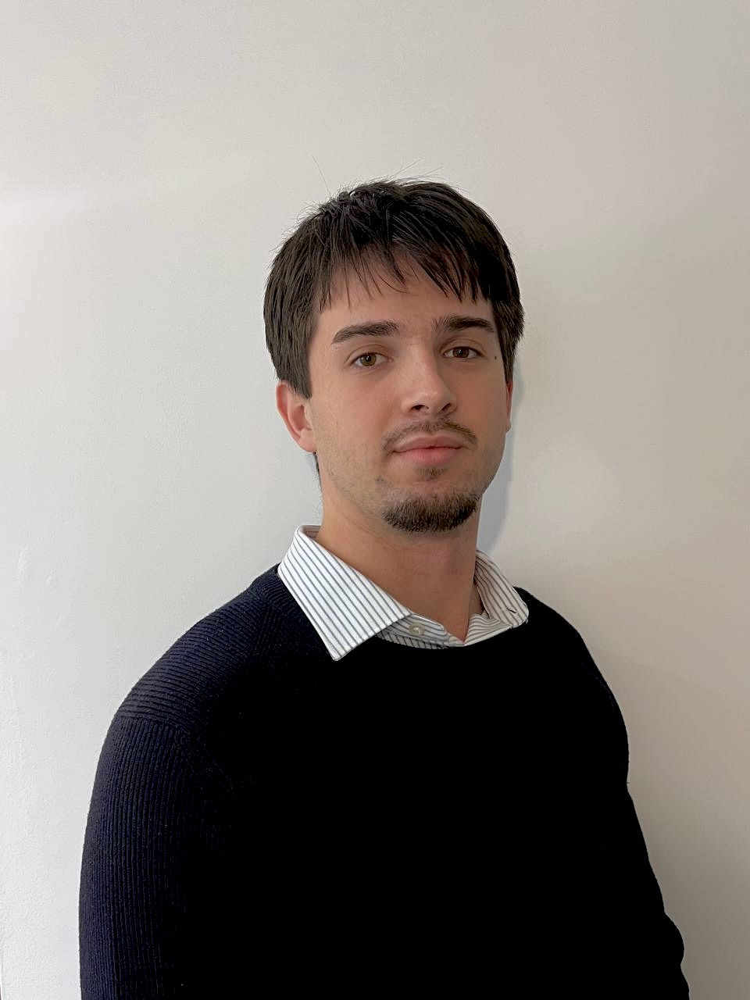
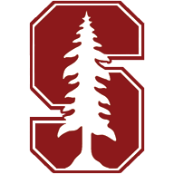

Tazapay · AI & Analytics Intern
Innovative, fast-growing cross-border payments start-up, backed by Sequoia Capital & Circle Ventures · Singapore
Applied AI, deployment and data science work.

I’m an MSc student at NUS School of Computing (Business Analytics), specializing in Statistics. Recently I won the Google Cloud Rapid Agent Hackathon (1st place), received a BlueDot Impact grant for chain-of-thought interpretability, and previously won the National Mathematics Olympiad (top 0.015% nationally).
My work sits at the intersection of causal inference and production machine learning systems. I’m currently an AI & Analytics intern at Tazapay, an innovative, fast-growing cross-border payments company, and my previous experience spans quantitative research at Orbuc, a London-based crypto startup, and a data & analytics consultancy at The TCM Group, alongside independent projects in causal inference and Bayesian experimentation.
A Bayesian causal-mediation test of whether an LLM’s stated reasoning truly drives its answer or is just post-hoc, with calibrated uncertainty for scalable oversight.
First place ($5k prize), 15,000 teams, for AutoSRE, an autonomous on-call engineer that triages and resolves production incidents (Jul ’26).
Awarded a BlueDot Impact Rapid Grant (Jun ’26) to fund Bayesian Causal Faithfulness for LLM Chain-of-Thought: calibrated uncertainty for whether a model’s reasoning is faithful or post-hoc.
Winner of the Russian National Mathematics Olympiad (Moscow Institute of Physics & Technology), top 0.015% nationally.
Graduated with First-Class Honours (highest distinction) from Bayes Business School; top of cohort in Quantitative Methods & Analytics, AI & Big Data, Capstone Project, and ESADE Mergers & Acquisitions.
Full Scholarships at the National University of Singapore (Spring 2025) and ESADE Business School (Autumn 2024) exchanges, plus a fully-funded scholarship for the Beijing University of Posts & Telecommunications Agentic AI Bootcamp (Jun–Jul 2026).

Stanford CS229 / CS230 · MIT RES.6-012 Probability · Imperial Mathematics for ML · IBM Data Science Specialization · McElreath’s Statistical Rethinking (2026).
2026 · competitions & challenges
Innovative, fast-growing cross-border payments start-up, backed by Sequoia Capital & Circle Ventures · Singapore
Applied AI, deployment and data science work.
Statistical Modeling & Time-Series Research · London, UK
Bayes Business School Capstone · Highest grade in cohort · London, UK
Education & Admissions Consultancy · London, UK
Brazilian e-commerce panel · 97k orders · hierarchical Bayesian causal inference in PyMC 5
Experiment-safety auditing tool · SRM detection & causal inference · optional Claude tool-use agent
Energy-utility SME churn · 14,606 customers · cost-sensitive, decision-aware modelling
Sovereign-default prediction · 34-year cross-country macro panel · 5-model benchmark + PPO from scratch
Retail credit-risk modelling · probability-of-default under an asymmetric cost matrix · Q-learning
My solution to BlueDot’s AI-safety puzzle: the feature a linear probe couldn’t see
A small classifier was given eight features to represent. Seven it laid out as clean linear directions; the eighth — country — it hid, by folding a signed line in half so a linear probe, the workhorse of interpretability, reads pure noise while the feature sits there in plain sight. I show which feature it was, prove the mechanism is a ReLU absolute value with activation patching, then try to hide it in stranger ways — an angular ring, two features in superposition, a topological link — and find a network has a limited budget for weirdness: the fold is the cheapest non-linear code and the only one that emerges unsupervised. Interactive figures you can drag, fold, and spin, next to the real analysis plots.
Read the solution →The most overhyped threshold in statistics
Like a lot of people, when I was first introduced to the 0.05 significance threshold, I just took it for granted. Later, as I learned more statistics, I realized how confusing and misleading that hard line actually is. This essay explores why: a courtroom retelling where the p-value is the evidence, ‘significant’ is the verdict, and 0.05 is a fixed sentence nobody ever justified, with interactive figures for the tail area, the false-discovery rate, the dance of the p-values, and the Type I/II tradeoff.
Read the essay →A geometric reading of Hidden Markov Models & the EM algorithm
When I was learning hidden Markov models, I couldn’t find an explanation that really showed how they work. This piece builds a geometric, intuitive picture of hidden Markov models, along with the EM steps, forward-backward, Baum-Welch, and the Viterbi algorithm, and even how they link to PCA. Interactive diagrams and animations throughout aim to make the picture stick in your head.
Read the essay →marimo × alphaXiv molab Notebook Competition #2
My entry for the marimo × alphaXiv molab competition: take one of the offered alphaXiv papers and build something new on marimo’s molab platform. A write-up of the idea and what I built is on the way.
Write-up in progressMSc in NUS School of Computing (Business Analytics), Specialised in Statistics
Bootcamps:
BSc International Business (Hons), Specialised in AI and Quantitative Methods; First-Class Honours (Highest Distinction)
Top of cohort in Quantitative Methods & Analytics, AI & Big Data, Capstone Project, and ESADE Mergers & Acquisitions.
Extracurricular Quantitative Coursework: Stanford CS229 Machine Learning, Stanford CS230 Deep Learning, MIT RES.6-012 Introduction to Probability, Stanford EE178 Probabilistic Systems Analysis, Imperial College Mathematics for Machine Learning, IBM Applied Data Science Specialization (Databases & SQL, Visualization, Python), Statistical Rethinking 2026 (R. McElreath, Max Planck).
Final grade A* · Mathematics 87%, Highest Distinction
Causal Inference (DiD, RCT design, causal DAGs, wait-list controlled trials, synthetic controls, propensity-score matching, Rosenbaum sensitivity bounds, uplift modelling), A/B Testing & Experimentation (variant design, power analysis, SRM detection, CUPED variance reduction, multiple-testing correction), Bayesian Statistics (PyMC 5, NUTS, hierarchical models, posterior-predictive checks, PSIS-LOO), Survival Analysis (Cox PH, Kaplan-Meier, Random Survival Forest), Hypothesis Testing (t-test, Wilcoxon signed-rank, Mann-Whitney U, chi-square, Fisher z), Stochastic Processes & Sequential Modeling (Hidden Markov Models, time-series, state-space methods), SHAP, permutation importance, Brier, isotonic and LOOCV calibration, bootstrap & Hodges-Lehmann confidence intervals, Effect-size estimation (Cohen’s d, rank-biserial).
Supervised/Unsupervised Learning, Gradient Boosting (XGBoost, LightGBM), Anomaly & Rare-Event Detection, Neural Networks (CNNs, RNNs, LSTMs, Transformers, Two-Tower), NLP, Computer Vision, Recommendation Systems (implicit feedback, negative sampling, embeddings & vector search), Reinforcement Learning (Q-learning, DQN, PPO + GAE, Actor-Critic), Probabilistic Graphical Models, LLMs, Prompt Engineering, RAG, OpenAI API, Anthropic Claude tool-use, Zod structured outputs, LLM-as-judge evaluation, LLM Fine-Tuning, RLHF, Agentic AI (LangChain, LlamaIndex), Generative AI Applications.
Python (NumPy, pandas, scikit-learn, TensorFlow, PyTorch, statsmodels, SciPy, XGBoost, LightGBM, PyMC), TypeScript, C++, R, SQL, BigQuery, Spark/PySpark, DuckDB, React 19, Vite, Vercel Serverless, Supabase (Postgres).
Google Cloud Platform (BigQuery, Vertex AI), Docker, Kubernetes, MLOps (CI/CD, Model Deployment, Feature Pipelines, ETL/Airflow), GitHub Actions, pytest, Vitest, ruff, Git/GitHub, Jupyter, LaTeX, Tableau, Power BI, matplotlib, seaborn, Plotly.
English (Fluent), Russian (Native), Ukrainian (Native), Belarusian (Fluent), Spanish (Professional Working; advanced certification, 2026).
Stanford CS229 Machine Learning, Stanford CS230 Deep Learning, MIT RES.6-012 Introduction to Probability, Stanford EE178 Probabilistic Systems Analysis, Imperial College Mathematics for Machine Learning, IBM Applied Data Science Specialization, Statistical Rethinking 2026 (R. McElreath, Max Planck).